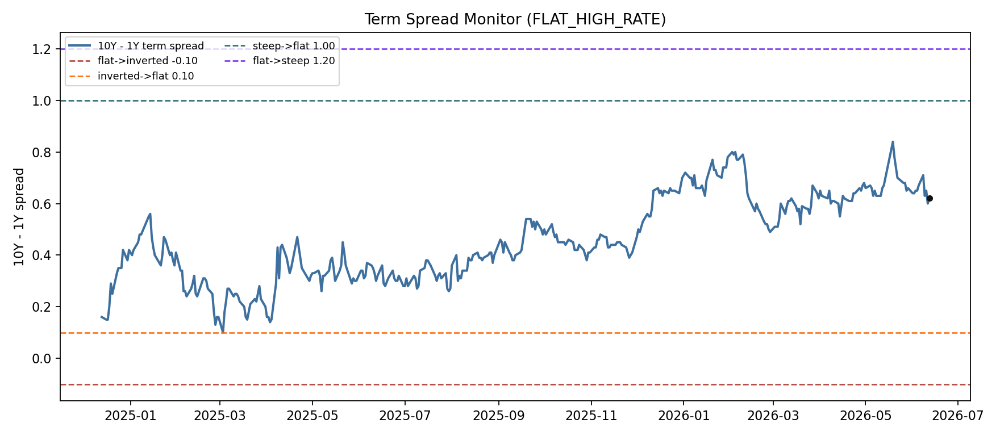
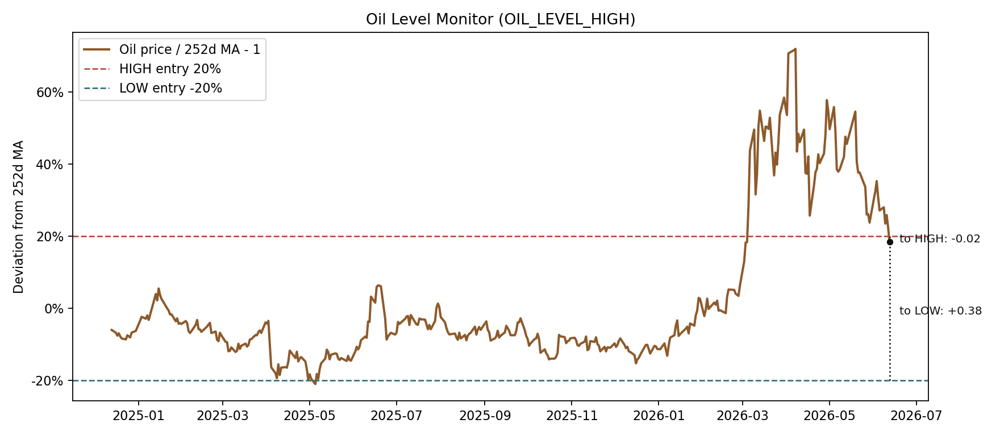

Current State
Latest data date
2026-06-12
Macro regime
FLAT_HIGH_RATE
Stress state
NON_RISK
Oil level
OIL_LEVEL_HIGH
Active locks
None
Regime start
2024-12-13
Days in regime
546
Allocation
IEF 40.00%, DBC 60.00%
Strategy vs SPY RTD
44.89% vs 27.50%
Current DD vs SPY
-5.76% vs -2.35%
Current Regime Interpretation
Economic Meaning
A flat curve with high long rates reflects elevated rate pressure while the curve is not steep enough to signal a broad pro-growth steep regime.
Typical Risk
Equity beta can be vulnerable if high rates tighten financial conditions or credit spreads widen.
Preferred Assets
The final strategy uses 40% IEF plus 60% gold/DBC inverse-vol in the normal state; if oil is HIGH, gold is removed from the floating sleeve.
Stress Behavior
Stress shifts to 10% DBA plus 90% gold; if oil is HIGH, the sleeve collapses to 100% DBA.
Monitoring Focus
Watch the term spread boundary near STEEP, credit spread changes, VIX shocks, and oil level changes.
- FLAT_HIGH_RATE: A flat curve with high long rates reflects elevated rate pressure while the curve is not steep enough to signal a broad pro-growth steep regime.
- Stress state is NON_RISK; active locks are none.
- Oil state is OIL_LEVEL_HIGH; oil price is +18.4% versus its 252-day average.
- Outer macro regime uses term-spread hysteresis with thresholds flat->inverted -0.10, inverted->flat 0.10, flat->steep 1.20, steep->flat 1.00.
- The largest sleeve is DBC; the displayed target weights come directly from the final allocation rule.
- The closest monitored signal is Oil price vs 252d MA (HIGH entry), currently below HIGH entry.
- Regime-to-date, the strategy has outperformed SPY.
Current Allocation

| date | state | asset | weight | allocation_method | realized_vol | inverse_vol_raw_weight | reason |
|---|---|---|---|---|---|---|---|
| 2026-06-12 | FLAT_HIGH_RATE_NORMAL | SPY | 0.00% | inverse_vol_monthly_hold | 0.15 | normal allocation for FLAT_HIGH_RATE | |
| 2026-06-12 | FLAT_HIGH_RATE_NORMAL | GOLD | 0.00% | inverse_vol_monthly_hold | 0.36 | normal allocation for FLAT_HIGH_RATE | |
| 2026-06-12 | FLAT_HIGH_RATE_NORMAL | IEF | 40.00% | inverse_vol_monthly_hold | 0.05 | 82.86% | normal allocation for FLAT_HIGH_RATE |
| 2026-06-12 | FLAT_HIGH_RATE_NORMAL | DBC | 60.00% | inverse_vol_monthly_hold | 0.25 | 17.14% | DBC is active under FLAT_HIGH_RATE_NORMAL; oil state is OIL_LEVEL_HIGH. |
| 2026-06-12 | FLAT_HIGH_RATE_NORMAL | DBB | 0.00% | inverse_vol_monthly_hold | 0.22 | DBB is active under FLAT_HIGH_RATE_NORMAL; oil state is OIL_LEVEL_HIGH. | |
| 2026-06-12 | FLAT_HIGH_RATE_NORMAL | DBA | 0.00% | inverse_vol_monthly_hold | 0.09 | DBA is active under FLAT_HIGH_RATE_NORMAL; oil state is OIL_LEVEL_HIGH. | |
| 2026-06-12 | FLAT_HIGH_RATE_NORMAL | CASH | 0.00% | inverse_vol_monthly_hold | 0.00 | cash sleeve uses FRED 3-month T-bill daily accrual (DTB3, or TB3MS fallback) |
The current state is FLAT_HIGH_RATE_NORMAL. Under this state, the final strategy target allocation is IEF / DBC. The current weights are generated by the final allocation rule and held until the next scheduled or state-driven rebalance. Weights are based on realized volatility over the final strategy lookback window. Because oil is HIGH, the flat sleeve removes GOLD and DBB where applicable.
Dynamic Weights Since Current Regime Start
This chart shows how target weights evolved during the current regime. Vertical markers indicate rebalance dates.

| date | rebalance_reason | previous_state | new_state | previous_weights_summary | new_weights_summary | active_locks |
|---|---|---|---|---|---|---|
| 2026-04-07 | stress_unlock | FLAT_HIGH_RATE_STRESS | FLAT_HIGH_RATE_NORMAL | DBA 100.00% | IEF 40.00%, DBC 60.00% | |
| 2026-03-18 | inverse_vol_update | FLAT_HIGH_RATE_STRESS | FLAT_HIGH_RATE_STRESS | GOLD 90.00%, DBA 10.00% | DBA 100.00% | VIX |
| 2026-03-09 | stress_entry | FLAT_HIGH_RATE_NORMAL | FLAT_HIGH_RATE_STRESS | GOLD 20.78%, IEF 40.00%, DBC 39.22% | GOLD 90.00%, DBA 10.00% | VIX |
| 2026-03-02 | scheduled_rebalance | FLAT_HIGH_RATE_NORMAL | FLAT_HIGH_RATE_NORMAL | GOLD 20.53%, IEF 40.00%, DBC 39.47% | GOLD 20.78%, IEF 40.00%, DBC 39.22% | |
| 2026-02-02 | scheduled_rebalance | FLAT_HIGH_RATE_NORMAL | FLAT_HIGH_RATE_NORMAL | GOLD 22.02%, IEF 40.00%, DBC 37.98% | GOLD 20.53%, IEF 40.00%, DBC 39.47% | |
| 2026-01-02 | scheduled_rebalance | FLAT_HIGH_RATE_NORMAL | FLAT_HIGH_RATE_NORMAL | GOLD 22.46%, IEF 40.00%, DBC 37.54% | GOLD 22.02%, IEF 40.00%, DBC 37.98% | |
| 2025-12-01 | scheduled_rebalance | FLAT_HIGH_RATE_NORMAL | FLAT_HIGH_RATE_NORMAL | GOLD 22.40%, IEF 40.00%, DBC 37.60% | GOLD 22.46%, IEF 40.00%, DBC 37.54% | |
| 2025-11-26 | stress_unlock | FLAT_HIGH_RATE_STRESS | FLAT_HIGH_RATE_NORMAL | GOLD 90.00%, DBA 10.00% | GOLD 22.40%, IEF 40.00%, DBC 37.60% | |
| 2025-11-19 | stress_entry | FLAT_HIGH_RATE_NORMAL | FLAT_HIGH_RATE_STRESS | GOLD 22.40%, IEF 40.00%, DBC 37.60% | GOLD 90.00%, DBA 10.00% | VIX |
| 2025-11-03 | scheduled_rebalance | FLAT_HIGH_RATE_NORMAL | FLAT_HIGH_RATE_NORMAL | GOLD 29.96%, IEF 40.00%, DBC 30.04% | GOLD 22.40%, IEF 40.00%, DBC 37.60% |
Signal Distance




| category | signal | current_value | threshold_value | distance | status | interpretation |
|---|---|---|---|---|---|---|
| VIX | VIX Z-score | -0.39 | 3.00 | -3.39 | below entry | VIX stress entry is active at or above 3.0 z-score. |
| VIX | VIX Z-score | -0.39 | 1.50 | -1.89 | unlock not met | VIX lock unlock also requires SPY above MA20. |
| Credit | Credit 15D change | -0.03 | 0.10 | -0.13 | below entry | Credit lock entry also requires SPY below MA20. |
| Credit | Credit level Z | -1.98 | 0.90 | -2.88 | unlock condition met | Credit unlock also requires SPY above MA50. |
| SPY trend | SPY vs MA20 | 741.75 | 745.07 | -3.32 | below MA20 | Positive distance means SPY is above MA20. |
| SPY trend | SPY vs MA50 | 741.75 | 722.80 | 18.95 | above MA50 | Positive distance means SPY is above MA50. |
| SPY trend | SPY drawdown from previous high | -0.02 | -0.05 | 0.03 | above drawdown monitor | Drawdown is monitored as context for risk stress. |
| Regime variables | Term spread boundary | 0.62 | 1.20 | -0.58 | below steep entry | Outer macro regime uses hysteresis, not a single 0/1 threshold. |
| Oil level | Oil price vs 252d MA | 0.18 | 0.20 | -0.02 | below HIGH entry | Oil HIGH removes GOLD and DBB from flat sleeves. |
| Oil level | Oil price vs 252d MA | 0.18 | -0.20 | 0.38 | above LOW entry | Oil LOW keeps the flat sleeves fully open. |
| Regime variables | Nearest regime boundary | 0.62 | 1.00 | -0.38 | away from boundary | Current regime is FLAT_HIGH_RATE; nearest boundary is steep->flat threshold. |
Regime-to-Date Performance


| date | strategy_return | spy_return | strategy_nav | spy_nav | strategy_drawdown | spy_drawdown |
|---|---|---|---|---|---|---|
| 2026-05-28 | +0.56% | +0.55% | 1.48 | 1.2971 | -3.46% | 0.00% |
| 2026-05-29 | -0.44% | +0.25% | 1.48 | 1.3004 | -3.89% | 0.00% |
| 2026-06-01 | +0.97% | +0.27% | 1.49 | 1.3039 | -2.96% | 0.00% |
| 2026-06-02 | +0.29% | +0.14% | 1.50 | 1.3057 | -2.67% | 0.00% |
| 2026-06-03 | +0.24% | -0.70% | 1.50 | 1.2965 | -2.44% | -0.70% |
| 2026-06-04 | -0.76% | +0.38% | 1.49 | 1.3014 | -3.19% | -0.33% |
| 2026-06-05 | -1.52% | -2.58% | 1.47 | 1.2678 | -4.66% | -2.90% |
| 2026-06-08 | +0.45% | +0.23% | 1.47 | 1.2707 | -4.23% | -2.68% |
| 2026-06-09 | -0.70% | -0.29% | 1.46 | 1.2670 | -4.90% | -2.96% |
| 2026-06-10 | +0.17% | -1.58% | 1.46 | 1.2470 | -4.74% | -4.49% |
| 2026-06-11 | -0.38% | +1.70% | 1.46 | 1.2682 | -5.10% | -2.87% |
| 2026-06-12 | -0.69% | +0.54% | 1.45 | 1.2750 | -5.76% | -2.35% |
Regime Timeline

Stress Episodes
| episode_id | start_date | end_date | active_trigger | duration_days | SPY_return | strategy_return | CASH_return | SPY_max_drawdown | strategy_max_drawdown | avoided_drawdown_estimate |
|---|---|---|---|---|---|---|---|---|---|---|
| 1 | 2025-03-11 | 2025-03-24 | VIX | 10 | +2.72% | +3.73% | +0.16% | -1.33% | -1.30% | -0.03% |
| 2 | 2025-04-04 | 2025-04-24 | CREDIT+VIX | 14 | +1.86% | +6.82% | +0.23% | -6.33% | -3.28% | -3.05% |
| 3 | 2025-11-19 | 2025-11-25 | VIX | 5 | +2.26% | +1.09% | +0.07% | -1.52% | -0.25% | -1.28% |
| 4 | 2026-03-09 | 2026-04-06 | VIX | 20 | -1.73% | -0.50% | +0.28% | -6.57% | -3.50% | -3.07% |
Warnings
- Asset price download failed for SPY (SPY): empty yfinance response
- Asset price download failed for GOLD (GLD): empty yfinance response
- Asset price download failed for IEF (IEF): empty yfinance response
- Asset price download failed for DBC (DBC): empty yfinance response
- Asset price download failed for DBB (DBB): empty yfinance response
- Asset price download failed for DBA (DBA): empty yfinance response
- Asset price download failed for OIL_SIGNAL (CL=F): empty yfinance response
- Using existing asset price cache because incremental yfinance download did not return usable data.
- Using local processed asset price fallback because yfinance download did not return usable data.
- Extended or backfilled live asset series from local data: SPY, GOLD, IEF.
- Asset panel truncated to common latest date 2026-06-12; per-asset latest dates: SPY=2026-06-12, GOLD=2026-06-12, IEF=2026-06-15, DBC=2026-06-12, DBB=2026-06-12, DBA=2026-06-12, OIL_SIGNAL=2026-06-12.
All Regime Interpretations
FLAT_LOW_RATE
- Economic Meaning: A flat curve with low long rates usually points to subdued nominal growth expectations and limited rate pressure.
- Typical Risk: The main risk is that defensive rate-sensitive exposure can lag if growth risk fades quickly.
- Preferred Assets: The final strategy uses SPY, DBC, and DBB inverse-vol in the normal state; if oil is HIGH, DBB is removed.
- Stress Behavior: Stress locks move the sleeve to cash for FLAT_LOW/MID stress states.
- Monitoring Focus: Watch VIX, credit widening, oil level, and whether the curve shifts out of the flat regime.
FLAT_MID_RATE
- Economic Meaning: A flat curve with mid-level rates is a balanced but late-cycle-looking state.
- Typical Risk: Risk assets can still work, but the flat curve leaves less cushion if credit or volatility deteriorates.
- Preferred Assets: The final strategy uses SPY and gold inverse-vol in the normal state; if oil is HIGH, the sleeve collapses to SPY.
- Stress Behavior: Stress locks move the sleeve to cash for FLAT_LOW/MID stress states.
- Monitoring Focus: Watch VIX, credit widening, SPY trend confirmation, and whether oil HIGH removes gold from the flat sleeve.
FLAT_HIGH_RATE
- Economic Meaning: A flat curve with high long rates reflects elevated rate pressure while the curve is not steep enough to signal a broad pro-growth steep regime.
- Typical Risk: Equity beta can be vulnerable if high rates tighten financial conditions or credit spreads widen.
- Preferred Assets: The final strategy uses 40% IEF plus 60% gold/DBC inverse-vol in the normal state; if oil is HIGH, gold is removed from the floating sleeve.
- Stress Behavior: Stress shifts to 10% DBA plus 90% gold; if oil is HIGH, the sleeve collapses to 100% DBA.
- Monitoring Focus: Watch the term spread boundary near STEEP, credit spread changes, VIX shocks, and oil level changes.
STEEP_LOW_RATE
- Economic Meaning: A steep curve with low long rates often reflects recovery expectations while policy remains easy.
- Typical Risk: The main risk is a failed recovery or a commodity reversal.
- Preferred Assets: The final strategy holds 100% SPY in the normal state.
- Stress Behavior: If an existing stress lock carries into this state, the strategy holds SPY until unlock.
- Monitoring Focus: Watch regime persistence, SPY trend, and whether stress carries over from the previous state.
STEEP_MID_RATE
- Economic Meaning: A steep curve with mid-level long rates is typically the cleanest pro-growth state.
- Typical Risk: The main risk is a fast volatility or credit shock that breaks the growth trend.
- Preferred Assets: The final strategy holds SPY in the normal state.
- Stress Behavior: Stress shifts to IEF.
- Monitoring Focus: Watch credit spread changes, SPY trend, and whether rates move into the high bucket.
STEEP_HIGH_RATE
- Economic Meaning: A steep curve with high long rates can combine growth participation with inflation or rate pressure.
- Typical Risk: Equities can still participate, but rate-sensitive valuation pressure and commodity shocks matter.
- Preferred Assets: The final strategy uses SPY and gold inverse-vol in the normal state.
- Stress Behavior: Stress shifts to IEF.
- Monitoring Focus: Watch credit widening, VIX, and whether the term spread compresses back into FLAT.
INVERTED
- Economic Meaning: An inverted curve usually reflects restrictive policy and elevated recession risk.
- Typical Risk: Equity drawdowns and credit stress can appear with a lag after inversion.
- Preferred Assets: The final strategy uses SPY and gold in the normal state.
- Stress Behavior: Stress keeps 90% cash and 10% SPY.
- Monitoring Focus: Watch credit level z-score, VIX unlock conditions, and SPY trend.